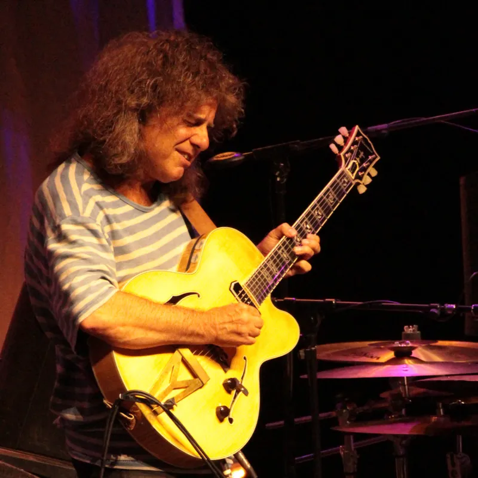

Pat Metheny
Pat Metheny er en amerikansk jazzgitarist, komponist og bandleder. Han ble født 12. august 1954 i Lee's Summit, Missouri. Metheny regnes som en av de mest innflytelsesrike og innovative gitaristene i jazzens historie.
Methenys musikalske reise begynte i ung alder, og han utviklet en unik spillestil og lyd preget av sin distinkte tone, melodiske improvisasjoner og bruk av innovative gitarteknikker. Han blander sømløst elementer fra jazz, rock, fusion, latinmusikk og verdensmusikk i sine komposisjoner og opptredener.
Gjennom karrieren har Metheny gitt ut utallige album som solomusiker og med sitt Pat Metheny Group. Hans svært omfattende diskografi spenner over et bredt spekter av stiler og sjangre, og viser hans allsidighet og kunstneriske utforskning. Et sikkert bevis for dette er hans nominasjon til hele 38 Grammy Awards i hele13 ulike kategorier og 20 Grammy-priser i 10 kategorier over fire ti-år. Dette gjør ham unik, da ingen andre musikere har klart det samme. Han har vunnet flest priser innen jazzsjangeren, men også i kategorier som "Best Rock Instrumental", "Best Pop Instrumental"og "Best New Age Album", og han har også blitt nominert for "Best Country Instrumental".
Metheny har samarbeidet med mange kjente musikere på tvers av ulike sjangre, inkludert Jaco Pastorius, Herbie Hancock, David Bowie og Joni Mitchell. Hans bidrag til utviklingen av jazzgitar og hans evne til å utfordre musikalske uttrykksgrenser har gitt ham kritikerros og en hengiven fanskare over hele verden.
Han fortsetter å fylle de største konsertsalene over store deler av verden. Utover sitt gitarspill er Metheny også kjent for sine ferdigheter som komponist og evnen til å skape komplekse og stemningsfulle musikalske landskap. Hans komposisjoner kjennetegnes ofte av rike harmonier, minneverdige melodier og intrikate arrangementer.
Pat Methenys musikalske arv fortsetter å inspirere og påvirke generasjoner av musikere og lyttere. Hans dedikasjon til å utfordre kunstneriske grenser og stadige utforskning av nye lyder har etablert ham som en sann nyskaper innen jazz og flere andre sjangere.